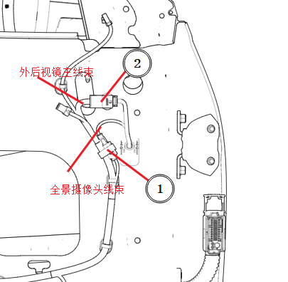
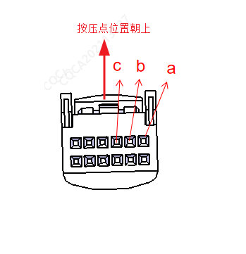
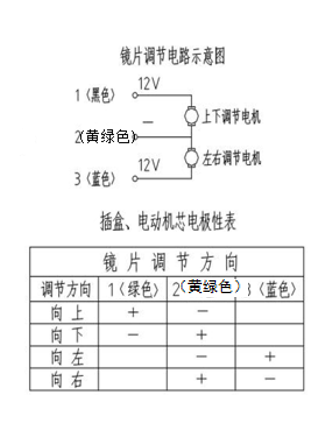

Снять облицовочную панель передней двери с автомобиля.
Нажав на точку 2, извлечь главный жгут проводов наружного зеркала заднего вида в направлении стрелки. При этом провод а соответствует регулировке зеркального элемента наружного зеркала заднего вида по вертикали, b — общему выводу, с — регулировке зеркального элемента наружного зеркала заднего вида по горизонтали; извлечь провода а, b и c из разъема и подать на них питание 12V напрямую для проверки исправности функции регулировки зеркала.
Если при отдельной проверке регулировка зеркального элемента наружного зеркала заднего вида работает нормально, отказ регулировки связан с системой управления автомобиля; если при отдельной проверке регулировка зеркального элемента наружного зеркала заднего вида не работает, заменить наружное зеркало заднего вида.


